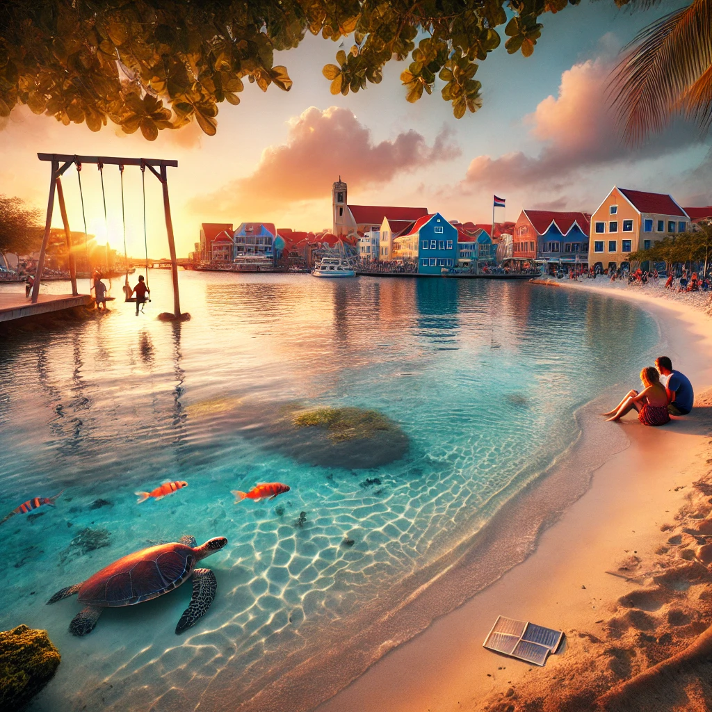

Curaçao, with its clear blue waters, stunning sunsets, and warm ocean temperatures, has become our family’s favorite getaway.
Snorkeling right from our hotel, we saw vibrant fish and coral, much like scenes from Finding Nemo. Each dive was a new adventure!
We had a chance to swim with turtles at a nearby beach, an unforgettable experience for everyone.
As baseball fans, we loved learning that Curaçao’s national sport is baseball, making it extra special for our son.
Walking through Willemstad, we admired the vibrant architecture and even had fun on the swinging bridge when it opened for passing boats!
The peaceful sound of the ocean while enjoying pizza on the beach brought us a sense of calm. Evenings spent watching the sunset from local restaurants and making new friends from California made it all the more special.
Looking back at photos of our son snorkeling and of us as a family, I’m filled with cherished memories of time spent together in Curaçao.
For anyone planning a trip to Curaçao, we recommend staying at one of the hotels along the south shore, just east of Willemstad. The calm waters are perfect for a relaxing stay, and it’s easy to visit town for sightseeing.
Make sure to try the turtle snorkeling tour and, if you’re a golfer, the local courses are fantastic!